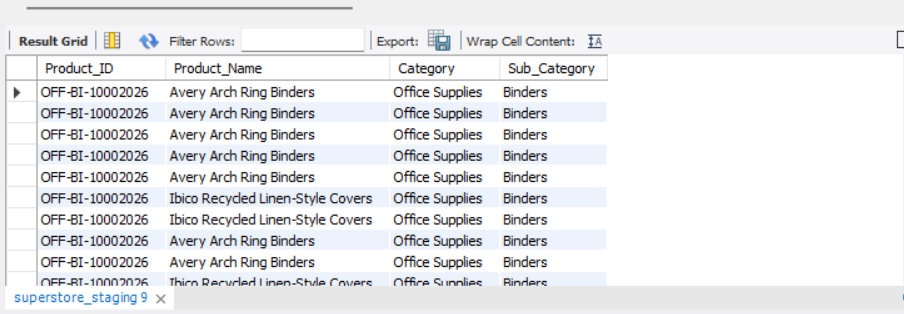
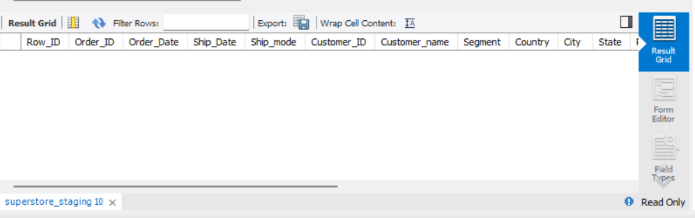
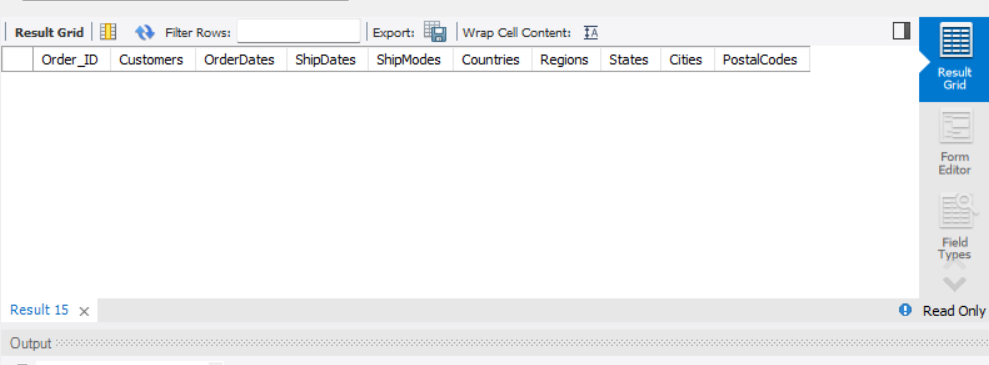
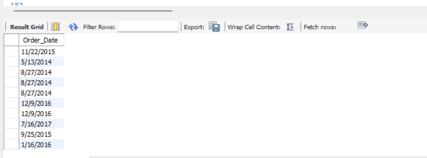
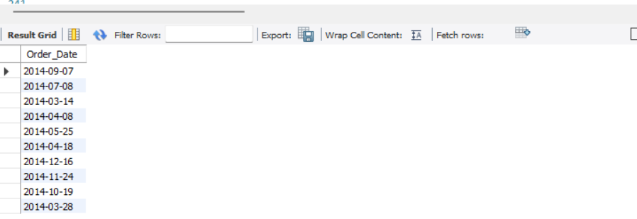

Project Overview
The Retail Sales Analytics Database is a relational database designed to manage retail sales information efficiently. The database organizes customers, products, orders, and order details while minimizing redundancy through normalization. This project demonstrates database design principles, documentation standards, and preparation for future analytical reporting using SQL and Power BI.
Project Objectives
- Store customer information.
- Manage product information.
- Record customer orders.
- Store product-level sales transactions.
- Support future reporting and analytics.
Database Structure
The database consists of four normalized tables designed to manage customers, products, orders, and order details while maintaining referential integrity.

Table Summery
| Table | Purpose | Primary key |
|---|---|---|
| Customer | Store customer information | Customer_ID |
| Product | Store product information | Product_ID |
| Orders | Stores order details and shipping information | Order_ID |
| Order_Details | Stores individual products within each order | OderDetaild_ID |
Relationship description
1. Customer → Orders
- One customer can place multiple orders.
- Each order belongs to one customer.
2. Orders → Order_Detail
- One order can contain multiple products.
- Each product in an order is stored as a separate record.
3. Product → Order_Detail
- One product can appear in many orders.
Normalization
The database was normalized to Third Normal Form (3NF) to eliminate redundant data, maintain consistency, and improve update efficiency. Customer, Product, Order, and Order Detail information are stored in separate tables linked through primary and foreign keys.
Constraints
- Primary keys uniquely identify each record.
- Foreign keys maintain referential integrity.
- Mandatory fields are defined using NOT NULL constraints
Data Dictionary
The data dictionary defines the structure of the Retail Sales Analytics database by documenting each table, attribute, data type, key constraints, and business meaning. It serves as a reference for developers, analysts, and stakeholders to ensure consistency and data integrity.
| Table | Column | Data Type | PK/FK | nullable | Description |
|---|---|---|---|---|---|
| Customer | Customer_ID | VARCHAR(50) | PK | No | Unique customer identifier |
| Customer | Customer_Name | VARCHAR(100) | - | No | Customer's full name |
| Customer | Segment | VARCHAR(50) | - | No | The segment which customer belongs |
| Product | Product_ID | VARCHAR(50) | PK | No | Unique product identifier |
| Product | Product_Name | VARCHAR(200) | - | No | Product’s name |
| Product | Category | VARCHAR(100) | - | No | Category the product belong |
| Product | Sub_Category | VARCHAR(100) | - | No | Sub category the product belong |
| Orders | Order_ID | VARCHAR(50) | PK | No | Unique order identifier |
| Orders | Order_Date | DATE | - | No | Date which the order was placed |
| Orders | Customer_ID | VARCHAR(50) | FK | No | Identify the customer who placed the order |
| Orders | Country | VARCHAR(100) | - | No | Country order is delivered |
| Orders | Region | VARCHAR(100) | - | No | Region order is delivered |
| Orders | City | VARCHAR(100) | - | No | City order is delivered |
| Orders | State | VARCHAR(100) | - | No | State order is delivered |
| Orders | Postal_Code | VARCHAR(100) | - | No | Postal code order is delivered |
| Orders | Ship_Date | DATE | - | Yes | Shipping date order is delivered |
| Orders | Ship_Mode | VARCHAR(100) | - | No | Shipping mode order is delivered |
| Order_Detail | OrderDetail_ID | VARCHAR(50) | PK | No | Unique order detail identifier |
| Order_Detail | Order_ID | VARCHAR(50) | FK | No | Identify the order related to the order detail |
| Order_Detail | Product_ID | VARCHAR(50) | FK | No | Identify the product belongs to the order |
| Order_Detail | Sales | DECIMAL(10,2) | - | No | Sales amount of the relevant product of the relevant order |
| Order_Detail | Quantity | INT | - | No | Quantity of the relevant product of the relevant order |
| Order_Detail | Discount | DECIMAL(5,2) | - | No | Discount the customer got |
| Order_Detail | Profit | DECIMAL(10,2) | - | No | Profit of the relevant product of the relevant order |
ETL Process
The raw retail dataset was extracted from the Kaggle Superstore dataset, validated for data quality issues, transformed into a normalized structure, and finally loaded into the Retail Sales Analytics database.
Extract
- Imported the Kaggle Superstore CSV into a staging table.
- Preserved the original dataset without modifications.
- Used the staging table as the source for all transformations.
Validate
- Checked duplicate Product IDs.
- Verified missing values.
- Validated Customer and Order identifiers.
- Detected inconsistent Product ID → Product Name mappings.
Transform
- Normalized the source dataset.
- Separated Customer, Product, Orders and Order Detail entities.
- Resolved duplicate Product IDs during loading.
- Prepared the dataset for analytical queries.
Load
- Loaded cleaned records into normalized tables.
- Maintained primary and foreign key relationships.
- Verified successful record insertion.
- Prepared the database for business analytics.
Data Pipeline Architecture
The data pipeline transforms raw Superstore data into analytics-ready relational tables using Python ETL and SQL transformations.
Raw Dataset
Original Superstore CSV containing sales transactions.
Data Cleaning
Handle missing values, formatting issues and data validation.
Python ETL Pipeline
Pandas processes CSV data and MySQL Connector loads records.
Staging Table
Clean dataset stored in MySQL staging layer.
SQL Transformation
Normalize staging data into relational tables.
Power BI Dashboard
Business insights and analytical reporting.
Sample Data Population
To validate the database design, the normalized tables were populated using the
cleaned Superstore dataset.
The data loading process involved extracting records from the staging table and
inserting them into the corresponding relational tables.
Population Workflow
superstore_staging
Data Population Summery
| Table | Rcords |
|---|---|
| Customer | 793 |
| Product | 1862 |
| Orders | 5009 |
| Order_Detail | 9994 |
Data Quality Validation
Validation Checks Performed
- Duplicate Primary Key Detection
- Null Value Validation
- Product Consistency Verification
- Record Count Verification
SQL Validation Queries
SQL queries used to validate data quality, identify inconsistencies, and ensure reliable database loading.
Duplicate Product ID Validation
Identifies duplicate product identifiers before inserting data into the normalized product table.
SELECT
Product_ID,
COUNT(*) AS Duplicate_Count
FROM staging_sales
GROUP BY Product_ID
HAVING COUNT(*) > 1;
Query Result

NULL Value Detection
Checks missing values that may affect database consistency.
SELECT *
FROM staging_sales
WHERE Customer_ID IS NULL
OR Product_ID IS NULL;
Query Result

Check Orders Consistency
Verifies the duplicated Order_IDs don't have conflicting values.
SELECT Order_ID,
COUNT(DISTINCT Customer_ID) AS Customers,
COUNT(DISTINCT Order_Date) AS OrderDates,
COUNT(DISTINCT Ship_Date) AS ShipDates,
COUNT(DISTINCT Ship_Mode) AS ShipModes,
COUNT(DISTINCT Country) AS Countries,
COUNT(DISTINCT Region) AS Regions,
COUNT(DISTINCT State) AS States,
COUNT(DISTINCT City) AS Cities,
COUNT(DISTINCT Postal_Code) AS PostalCodes
FROM superstore_staging GROUP BY Order_ID
HAVING Customers>1
OR OrderDates>1
OR ShipDates>1
OR ShipModes>1
OR Countries>1
OR Regions>1
OR States>1
OR Cities>1
OR PostalCodes>1;
Query Result

Data Format Transformation
Issue identified : The raw dataset stored Order_Date and Ship_Date values as text fields, while the database schema required SQL DATE data type.
Transformation Apllied
INSERT INTO Orders(
Order_ID,
Order_Date,
Customer_ID,
Country,
Region,
City,
State,
Postal_Code,
Ship_Date,
Ship_Mode
)
SELECT
Order_ID,
STR_TO_DATE(MIN(Order_Date), '%m/%d/%Y'),
MIN(Customer_ID),
MIN(Country),
MIN(Region),
MIN(City),
MIN(State),
MIN(Postal_Code),
STR_TO_DATE(MIN(Ship_Date), '%m/%d/%Y'),
MIN(Ship_Mode)
FROM superstore_staging
GROUP BY Order_ID;
Purpose
- Converted string based dates into SQL compatible DATE formats
- Ensured successful insertion into Orders table
- Improved consistency for future date based analysis
Before Transformation

After Transformation

Challenges & Solutions
Key data challenges identified during the ETL process and the solutions implemented.
Duplicate Product IDs
Challenge
Duplicate Product_ID values were identified during data loading, causing conflicts with primary key requirements in the Product table.
Solution
Analyzed the source data and redesigned the database structure by separating product information from transaction records to maintain normalization and data integrity.
Inconsistent Date Formats
Challenge
Order_Date and Ship_Date values were stored as text fields, while the database schema required SQL DATE data types.
Solution
Applied SQL date transformation using STR_TO_DATE() and validated converted values before inserting records into the Orders table.
Failed data import attempt
Challenge
Initially, I attempted to import the Superstore CSV file directly into MySQL using the LOAD DATA LOCAL INFILE command. However, MySQL returned an access restriction error: LOAD DATA LOCAL INFILE file request rejected due to restrictions on access This prevented direct CSV loading into the staging table.
Solution
Instead of relying on MySQL's local file import feature, I implemented a Python-based ETL approach using Pandas and MySQL Connector. The solution workflow was:
- Read the cleaned CSV file using Pandas.
- Establish a connection between Python and MySQL.
- Insert the dataset into the superstore_staging table programmatically.
- Verify the imported records in MySQL.
Technologies & Skills
The following tools and concepts were used during the design and documentation of the Retail Sales Analytics Database.
Tools
Database Concepts
Current Progress
- ✔ Database Specification
- ✔ Data Dictionary
- ✔ ETL Process
- 🔄 Entity Relationship Design
- ✔ SQL Table Creation
- 🔄 Sample Data Population
- ⏳ SQL Queries
- ⏳ Power BI Dashboard